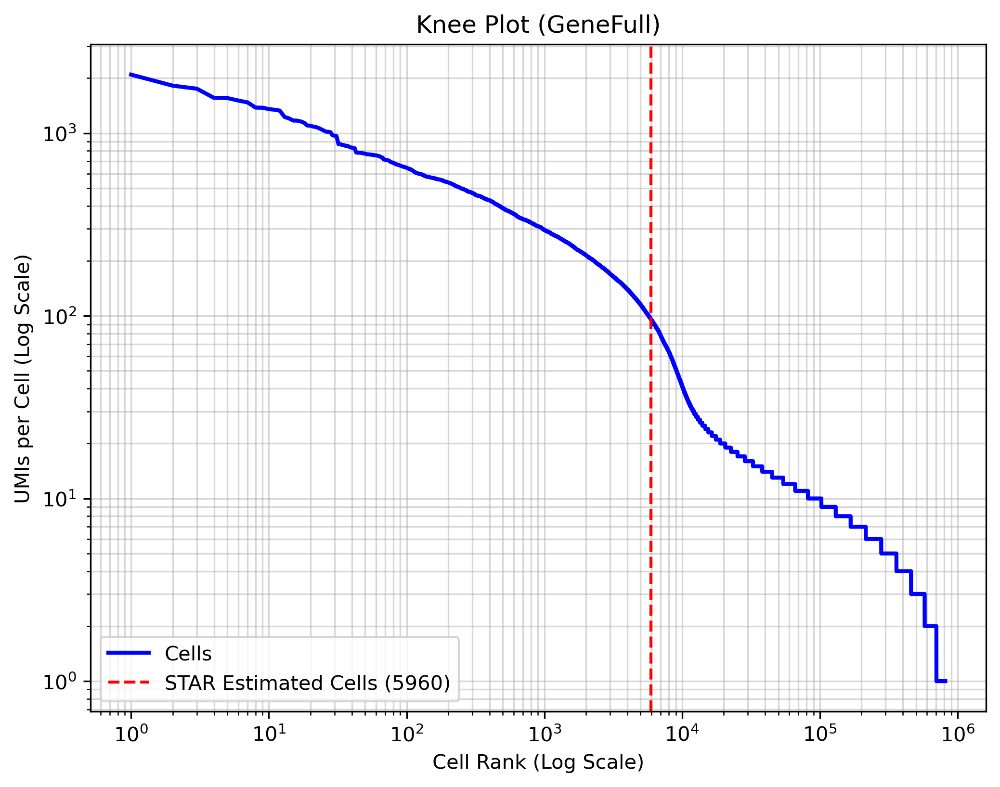

| Sample_Index | Sample_Name | Sample_Type | Total_reads |
|---|---|---|---|
| TATCCTCT | RNA_C1200 | RNA | 36433285 |
No files found.
Started job on | Apr 29 12:41:00
Started mapping on | Apr 29 12:41:19
Finished on | Apr 29 12:43:48
Mapping speed, Million of reads per hour | 354.68
Number of input reads | 14679916
Average input read length | 30
UNIQUE READS:
Uniquely mapped reads number | 8642430
Uniquely mapped reads % | 58.87%
Average mapped length | 29.07
Number of splices: Total | 456645
Number of splices: Annotated (sjdb) | 412329
Number of splices: GT/AG | 448253
Number of splices: GC/AG | 4760
Number of splices: AT/AC | 468
Number of splices: Non-canonical | 3164
Mismatch rate per base, % | 0.55%
Deletion rate per base | 0.02%
Deletion average length | 1.36
Insertion rate per base | 0.02%
Insertion average length | 1.04
MULTI-MAPPING READS:
Number of reads mapped to multiple loci | 4635548
% of reads mapped to multiple loci | 31.58%
Number of reads mapped to too many loci | 528743
% of reads mapped to too many loci | 3.60%
UNMAPPED READS:
Number of reads unmapped: too many mismatches | 0
% of reads unmapped: too many mismatches | 0.00%
Number of reads unmapped: too short | 584759
% of reads unmapped: too short | 3.98%
Number of reads unmapped: other | 288436
% of reads unmapped: other | 1.96%
CHIMERIC READS:
Number of chimeric reads | 0
% of chimeric reads | 0.00%

noNoAdapter 0
noNoUMI 0
noNoCB 0
noNinCB 0
noNinUMI 0
noUMIhomopolymer 33
noNoWLmatch 0
noTooManyMM 0
noTooManyWLmatches 0
yesWLmatchExact 14679883
yesOneWLmatchWithMM 0
yesMultWLmatchWithMM 0
| Number of Reads | 14679916 |
|---|---|
| Reads With Valid Barcodes | 0.999998 |
| Sequencing Saturation | 0.240638 |
| Q30 Bases in CB+UMI | 0.934124 |
| Q30 Bases in RNA read | 0.938481 |
| Reads Mapped to Genome: Unique+Multiple | 0.9045 |
| Reads Mapped to Genome: Unique | 0.588725 |
| Reads Mapped to GeneFull: Unique+Multiple GeneFull | NoMulti |
| Reads Mapped to GeneFull: Unique GeneFull | 0.504534 |
| Estimated Number of Cells | 5960 |
| Unique Reads in Cells Mapped to GeneFull | 1733757 |
| Fraction of Unique Reads in Cells | 0.234085 |
| Mean Reads per Cell | 290 |
| Median Reads per Cell | 232 |
| UMIs in Cells | 1274367 |
| Mean UMI per Cell | 213 |
| Median UMI per Cell | 171 |
| Mean GeneFull per Cell | 187 |
| Median GeneFull per Cell | 153 |
| Total GeneFull Detected | 20177 |
No files found.